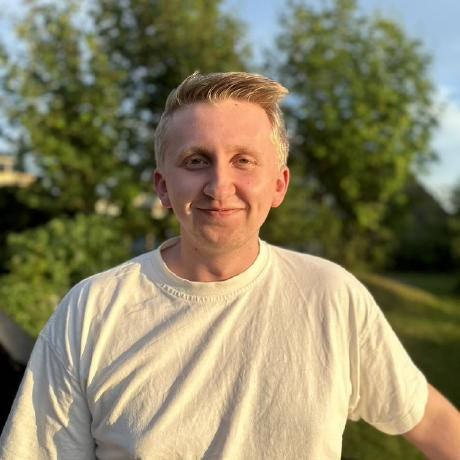

Got a summer job at the Technology departement at Aker Solutions Verdal as a developer at age 17 in 2022. From there I got promoted several times, with the latest making me a Senior Engineer at age 19.
My work has been mainly focused towards the development of the world's first fully automated welding planner for use in the new Verdal Production Line, but has also touched on several other topics such as industrial robots, robotic welding and 3D-printing. I have also held intro-courses to Robotics for apprentices at Aker Solutions.
